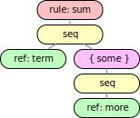
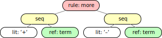
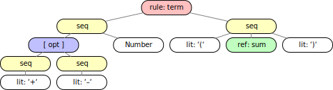

What's in a Parse Tree?
What's with the Brackets?
Chapter four explained that syntax analysis tries to build a parse tree to show that a sequence of input terminals is a sentence conforming to a grammar.
Output from the examples suggests that, indeed, something gets built, and it contains strings related to the input terminals. However, the output seems to consist mostly of brackets, and it is very hard to see that the output models the parse tree as very deeply nested JavaScript lists.
This chapter explains how the lists come about
and how syntax analysis can be augmented with Action methods to translate input
into something more convenient.
Lists
Trace output from example 5/01 demonstrates
that the parse() method
of the Parser object generated by the grammar's
parser() method
collects a list containing the input strings from the
which correspond to the terminals in the grammar rule.
Here is a sequence of eight examples, 5/01 through 5/08, which illustrate how rules, brackets, and braces collaborate to create nested lists. Each time
-
press to represent and check the grammar;
-
toggle and press to watch how syntax analysis builds the nested lists.
| grammar | output | example |
|---|---|---|
sum: Number '+' Number; |
[1 + 2] |
01: sum creates a list |
sum: term '+' Number;term: Number; |
[[1] + 2] |
02: term creates a list |
sum: term '+' term;term: Number; |
[[1] + [2]] |
03: term creates lists |
sum: Number [ '+' Number ]; |
[1 null][1 [+ 2]] |
04: brackets createnull or a list |
sum: term [ '+' term ];term: Number; |
[[1] null][[1] [+ [2]]] |
05: term creates lists |
sum: Number { '+' Number }; |
[1 [[+ 2]]][1 [[+ 2] [+ 3]]] |
06: braces create list of lists, one inner list per iteration |
sum: term { '+' term };term: Number; |
[[1] [[+ [2]]]] |
07: term creates lists |
sum: Number { more };more: '+' term;term: Number; |
[1 [[[+ [2]]]]] |
08: more creates anextra list |
Terminals produce strings in the nested lists. In the actual output on the practice page this is emphasized because strings are quoted there; in the output column above the quotes had to be omitted to save space.
In summary:
- The
parse()algorithm calls theparse()methods for objects selected during a top-down traversal of the rule trees of the grammar. By default, most of these methods produce lists.
|  |  |
|  | |
-
The fundamental branch node in a rule tree is a
Seqobject which always produces a list containing the values which the branch node's subtrees produce. -
Alternatives show up in a rule tree as branch nodes represented as
Rule,Opt, andSomeobjects. -
A
Ruleselects one of it'sSeqdescendants which produces a list for the rule's alternative matching the input. -
The list will contain exactly one entry for each item (terminal, rule reference, brackets, or braces) in the selected sequence.
-
Brackets are represented as an
Optobject in the rule tree which again hasSeqdescendants for the alternatives. -
If an alternative of
Opt(i.e., brackets) matches the input, it'sSeqwill produce a list, otherwise the brackets themselves producenull. -
Braces are represented as a
Someobject in the rule tree which again hasSeqdescendants for the alternatives. -
Somewill match at least one alternative, but it might be able to match several times in a row — the same or a different alternative. -
Therefore,
Some(i.e., braces) will return a list of one or more inner lists, one for each iteration. Each inner list corresponds to one matched alternative and it is produced by theSeqobject representing the alternative in the rule tree.
The Parser's parse() method
returns the nest of lists produced by the rule tree while syntax analysis recognizes a sentence.
List nesting is completely under control of the grammar
and the list nesting principles described above are uniform and relatively simple; however,
as the arithmetic expressions in example 2/12
or a simplified version just for sums in example 4/03 showed,
while this result of syntax analysis is well-formed it is usually so overwhelming
that it hardly invites further processing.
Action Methods
Fortunately, there is a way to interact with list creation whenever a rule completes recognition.
As discussed in chapter four,
syntax analysis is performed by the
Parser's parse() method
which calls on the parse() methods
of the various classes involved in representing a grammar as a rule tree.
Each grammar rule can be considered to be a function which has to recognize a part of the input which is described and structured according to the rule's right-hand side.
This function is the parse() method
associated with the Rule object representing the rule in the grammar's rule tree.
As described above, by default
this parse() method
creates a list containing whatever the descendants' parse() methods return.
The "check before you call" policy ensures that
there is no backing up and re-creating — recognition cannot be undone.
The real power of considering a grammar rule as a function
stems from the fact that each rule can be associated with an
Action method written in JavaScript
-
which is called when the
parse()method is done collecting, -
which receives the list collected by
parse()as individual arguments, and -
which returns a value which
parse()returns in place of the collected list.
Thus far we have not specified any Action methods —
this is why we have seen deeply nested lists as results of syntax analysis.
The Parser's parse() method accepts an optional argument:
-
a (singleton) object with methods names equal to some rule names, or
-
a class which the parser instantiates to create such an object; the constructor is called with a reference to the parser to facilitate error reporting.
Example 5/09 contains different Action methods to manipulate
a sequence of non-whitespace characters using the following grammar:
chars: { char };
char: Char;
For example, the Action methods
char (ch) { return ch; }
chars (some) {
return some.reduceRight((rev, list) => rev += list[0], '');
}
reverse the order of the characters of the palindrome
.ein.Esel.lese.nie!
-
Press to represent and check the grammar, and
-
press to see the output.
-
Uncomment one action for
charand/or one forcharsin the to see how the output changes. -
Toggle and/or and press to watch how input is found and converted by the
Actionmethods. In particular, if there is noActionmethod forcharthe trace shows that the rule returns a list containing a single character which theActionmethod forcharsconcatenates to a string... -
Erase either the methods or everything in the and press to see that without action methods the lists are generated.
Example 5/10 with the same grammar
shows how a property in the class can be used to communicate
among the Action methods:
class Actions {
#queue = [];
char (ch) { this.#queue.unshift(ch); }
chars () { return this.#queue.join(''); }
}
Initially, this.#queue is an empty array.
Syntax analysis proceeds from the start rule of the grammar down
to the terminal nodes which collect the input terminals from left to right.
unshift() stuffs arguments in front of a target array
and returns the new length (which is not used in this case).
Because of unshift() the action method for char stuffs
the non-whitespace input characters into the array in reverse order.
The action method for the start rule chars
returns the collected array elements as a string.
The following chapters illustrate with a few larger examples what Action methods can do:
we interpret arithmetic and compile a little language in chapter six,
we perform some type checking and add functions and block structure in chapter seven,
and we implement first-order functions in chapter eight.
Finally, we create a parser generator in chapter nine
which implements lexical and syntax analysis for grammars —
and which we have used all along.
Error Checking
Rules and Action methods are very loosely coupled
but by default the parser tries to check the number of values collected by
parse() against the number of parameters
defined for the action method:
-
The test is omitted if the action method has no parameters.
-
Rest parameters affect the count of expected parameters; in particular, the test is omitted if the entire parameter list is one rest parameter.
-
The test can be suppressed by setting no args.
Idioms for Actions
Each rule presents structured data
to it's Action method.
The Action method for the rule will receive
one argument for each top-level item in the rule.
Consider the grammar in example 5/11:
rule: 'literal' Number ref;
ref: Number;
There are two ways to write the parameter list
for the Action method,
namely using rest parameter syntax or using individual parameter names.
rule (...val) { /* ... */ }
With the rest parameter syntax the array val will contain three values
because there are three items in rule:
-
val[0]is the string value'literal'itself, -
parseInt(val[1], 10)is the decimal number computed from the string matched by the tokenNumber, and -
val[2]contains the value returned by theActionmethod, if any, for the referenced ruleref, or it contains the list of arguments which would have been presented to the referenced rule'sActionmethod.
A more convenient parameter list
for an Action method for rule
uses different parameter names for the different argument values:
rule (literal, number, ref) { /* ... */ }
and in this case
-
literalis the string valueliteralitself, -
parseInt(number, 10)is the convertedNumber, and -
refcontains the value returned by theActionmethod, if any, for the referenced ruleref, or it contains the list of arguments which would have been presented to the referenced rule'sActionmethod.
Note that if there is no Action method for a rule,
the rule returns a list containing the collected values.
Without an Action method
the rule ref above collects a string matched by the token Number
and returns it in an array.
- Therefore, if there is no
Actionmethod forref, theActionmethod forrulecan compute the decimal value asparseInt(ref[0], 10).
Consider the following Action methods for rule and ref:
rule (literal, number, ref) { /* ... */ }
ref (number) { return parseInt(number, 10); }
Now the Action method for rule receives the decimal value in the parameter ref
because the rule for ref has an Action method which returns that value.
Brackets and braces in a rule amount to unnamed rules
which cannot have Action methods, i.e.,
they contain alternatives which in turn contain sequences.
If such a sequence matches input it collects a list.
The following sections explain how to drill down to access the values.
[ optional ] — maybe
The following rule accepts the string literal,
optionally followed by either maybe or not,
and either of those followed by a number, check example 5/12:
rule: 'literal' [ 'maybe' Number | 'not' '!' Number ];
With explicit parameter names — one per top-level item in the rule —
rule (literal, opt) { /* ... */ }
here is how to get to the pieces:
-
literalwill contain the string valueliteralandoptwill contain a list. -
opt[0]will contain one of the stringsmaybeornot, and -
opt[1]oropt[2], respectively, will contain the string value collected for theNumber.
However, opt receives the result produced by one of the alternatives
in the brackets,
and that need not match any input — in which case opt is null.
Therefore, an Action method
to display the decimal values in the output area could be
class Actions {
// rule: 'literal' [ 'maybe' Number | 'not' '!' Number ];
rule (literal, opt) {
if (opt)
switch (opt[0]) {
case 'maybe': puts(opt[0], parseInt(opt[1], 10)); break;
case 'not': puts(opt[0], parseInt(opt[2], 10));
}
}
}
To switch or not to switch ...
Lexical analysis partitions the input into terminals.
Syntax analysis collects the terminals in rules.
It is inefficient if Action methods
have to use switch or if to deal with terminal strings again.
Example 5/13 accepts the same input as example 5/12
but two rules have been added
to simplify the corresponding Action methods:
class Actions {
// rule: 'literal' [ maybe | not ];
rule (literal, opt) { if (opt) puts(opt[0]); }
// maybe: 'maybe' Number; // returns Number value
maybe (m, number) { return parseInt(number, 10); }
// not: 'not' '!' Number; // returns Number value
not (n, exclamation, number) { return parseInt(number, 10); }
}
Brackets and braces can contain alternatives.
It is often easier to make each alternative a separate rule
to simplify the Action methods
and avoid inspecting terminals explicitly.
{ some } — at least once
Example 5/14 contains a typical grammar for a list of statements, each terminated by a semicolon:
list: { item ';' };
item: dec | hex;
dec: 'dec' Decimal;
hex: 'hex' ref;
ref: Hex;
list accepts one or more numbers,
each is preceded by dec or hex and followed by a semicolon.
There are tokens for decimal and hexadecimal numbers;
note that the token patterns overlap — hence the prefixes in the rules:
{ Decimal: /[0-9]+/, Hex: /[0-9a-fA-F]+/ }
- Press to represent and check the grammar,
- erase the , and
- press to see the nested lists.
- Why does the input
hex0;cause an error?
Without Action methods the input
dec 10;
hexBad;
dec 20;
produces
[
[
[ [ [ 'dec' '10' ] ] ';' ]
[ [ [ 'hex' [ 'Bad' ] ] ] ';' ]
[ [ [ 'dec' '20' ] ] ';' ]
]
]
If there are no Action methods
the outermost list (lines 1 and 7) is produced by the sequence for list.
The next list (lines 2 and 6) is produced by the braces (some)
and contains one list for each iteration —
the outer lists in lines 3 through 5.
The inner lists in lines 3 and 5 are produced by the sequence for dec or hex
and item adds one more list to these.
Bad is in one more list, produced by the sequence for ref (line 4).
Trick question:
Why are the blanks following dec in the program necessary,
whereas Bad can immediately follow hex?
With explicit parameter names here is how to untangle a pair of braces using Action methods:
class Actions14 {
/** `dec: 'dec' Decimal ';';` returns value */
dec (_, decimal) { return parseInt(decimal, 10); }
/** `hex: 'hex' ref ';';` returns value */
hex (_, ref) { return parseInt(ref[0], 16); }
/** `item: dec | hex;` returns `[ value ]`
`list: { item ';' };` displays value ... */
list (some) { puts(... some.map(list => list[0][0])); }
}
dec() and hex() decode the numbers.
There is no need for an Action method for ref
if hex() extracts the input string from the list
returned from the ref rule by default (line 6).
- Reload the example and press to represent and check the grammar.
- Toggle , and
- press to see how the numbers are extracted.
list() is now concerned with a list of lists which contain one number
and a semicolon each.
map() is used to convert this nest into
a simple list and the spread syntax converts that into
individual arguments for puts() to display (line 10).
[{ many }] — zero or more times
Example 5/15 is very similar, but for the fact that the statements are separated by commas.
list: item [{ ',' item }];
item: dec | hex;
dec: 'dec' Decimal;
hex: 'hex' ref;
ref: Hex;
The program
dec 10, hex Bad, dec 20
produces
> run = g.parser().parse(program, actions)
[ 10 2989 20 ]
With explicit parameter names here is how to untangle
a comma-separated list of items,
i.e., one dec or hex item followed by zero or more items,
with a comma preceding each item but the first:
class Actions15 extends Five.Actions14 {
/** `item: dec | hex;` returns `[ value ]`
`list: { item ';' };` returns `[ value ... ]` */
list (item, many) {
return item.concat(many ? many[0].map(list => list[1][0]) : []);
}
// alternative solution
// list (item, many) {
// return (many ? many[0] : []).reduce(
// (result, list) => (result.push(list[1][0]), result), item);
// }
}
- Press to represent and check the grammar.
- Toggle , and
- press to see how the numbers are extracted.
item is defined by a separate rule (comment in line 2);
without an Action method for item
the parameter item (line 4) will receive a list containing the first value.
This list is concatenated either with a list of further values or with an empty list (which is discarded).
If the parameter many (line 4) is not null, it is a list
containing the list of values for the alternatives created by the braces.
many[0] is the inner list and map() converts that into
a list of values that can be concatenated with the first value.
The callback for map() (line 5) each time receives a list produced
by the sequence
',' item
and list[1][0] drills down to the value in the second element of that list.
An alternative solution employs reduce() (lines 9 to 12):
-
If the parameter
manyisnull, i.e., if there is only oneitem,reduce()is applied to an empty list and returns the start value, i.e., the parameteritem. -
Otherwise, each time the callback function receives a list, extracts a value, and appends that to the
itemparameter.
The result is the same; however, the solution with concat()
works on list lengths known a priori whereas the alternative solution
dynamically extends the list passed as a parameter,
i.e., one would opt for the solution with concat().
Example 5/16 has the same grammar, tokens, and program
as example 5/15,
but this time the list action returns the sum of the numbers,
i.e., the list of items has to be processed into a single result:
class Actions16 extends Five.Actions14 {
// convoluted solution
// list (item, many) {
// return item.concat(many ? many[0].map(list => list[1][0]) : []).
// reduce((sum, value) => sum + value, 0);
// }
/** `item: dec | hex;` returns `[ value ]`
`list: [{ ',' item }];` returns `value +...` */
list (item, many) {
return (many ? many[0] : []).reduce(
(result, list) => result += list[1][0], item[0]);
}
}
A convoluted solution would use map() as before to
create a list of values (line 4) and follow up with reduce()
to produce the sum (line 5).
In this situation it is better to only apply reduce(),
either to the list of additional items or to an empty list (line 11),
initialize with the first value and add the others on the fly (line 12).
This avoids unneccesary dynamic list creation.
Extending Action Classes
The last three examples in this chapter share some grammar rules and the corresponding
Action methods:
example 5/14 defines item, dec, hex, and ref,
and examples 5/15 and 5/16
can just extend the action class defined for example 5/14
to inherit those methods and only overwrite
the Action method for list
where the corresponding rule has been changed
and/or a different algorithm should be applied.
The practice page supports this as follows:
-
If class names end in digits, such as
Actions14in example 5/14, the classes are exported from modules which are part of the environment provided by the practice page. -
The module names are global, e.g.,
Fivefor chapter five, so that, e.g., example 5/15 can inherit methods:
class Actions15 extends Five.Actions14 { ... }
It should be noted, however, that overwriting does not remove code.
For example, Actions15 contains it's own list method
and super.list(), i.e., the method from Actions14,
is still available, even if it is not used.
Chapter eleven discusses how with careful planning
mix-ins can be used to avoid dead code.
The following chapters will rely on modules in order to focus
on the Action methods
that are new or overwritten in a sequence of related examples.
(Unfortunately, the practice page will not
copy any other text — rules, tokens, or programs — from one example to another...)
Error Checking
A subclass inherits methods from the superclass
and it can delegate to a method in the superclass using super in place of this.
Argument checking as described above applies implicitly if an action method is inherited, and it is explicitly applied if a call such as
super.method(arg1, .., argn)
is replaced by
this.parser.call(this, super.method, arg1, .., argn)
using the method
call() defined in the parser
— assuming that the action object stores a reference to parser
which is provided during construction.
Quick Summary
-
The
Parser'sparse()method can be called with a class or a (singleton) object withActionmethods matched to the rule names in the grammar. -
Grammar rules plus their
Actionmethods, if any, are applied to the input. Calls proceed top-down, beginning with the start rule. -
Once a rule matches input an
Actionmethod is selected which has the same name as the rule. -
The
Actionmethod receives arguments corresponding to the alternative of the rule which matched the input, exactly one argument for each item (terminal, rule reference, brackets, or braces) in the alternative. -
Each set of brackets in the alternative produces either
nullor a list of values for the alternative in the brackets which matches the input. -
Each set of braces in the alternative produces a list which contains one inner list of values for each iteration.
-
The iteration itself produces the (inner) list for the alternative in the braces which matches input during this iteration.
-
The result value of the
Actionmethod is received by the parent rule'sActionmethod or returned by theParser'sparse()method. -
If there is no
Actionfunction the result value is a list of all argument values which theActionmethod would have received.